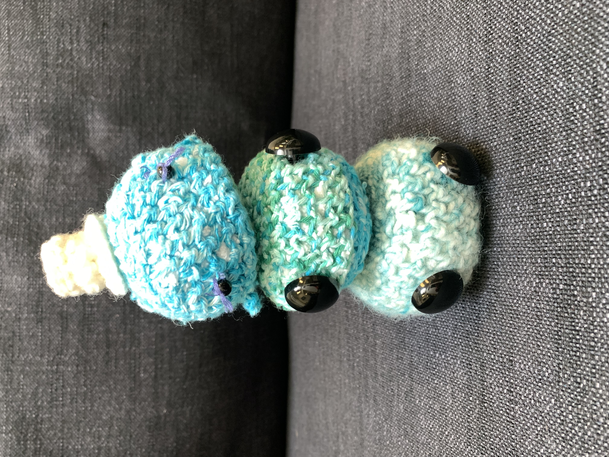

we make cute little crochet animals that are squishy and fun to play with.
our adorable little amigurumi crocheted animals can be used for stress relieving or for gifts. fun fact: amigurumi is the japanese art of knitting or crocheting small, stuffed animals.